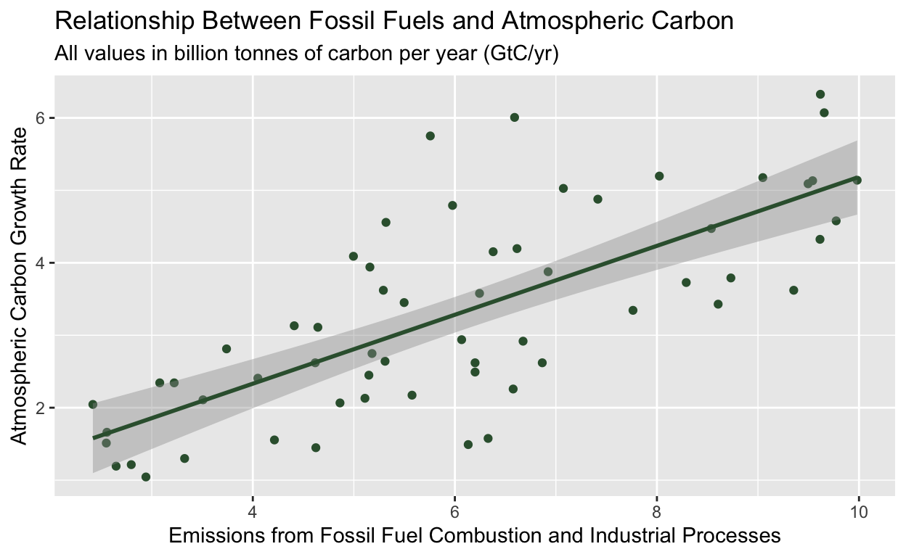

Introduction
Research Motivation and Questions
Climate change is an intrinsically multifaceted issue. The scientific conception of what climate change is, how it can be mitigated, what role policy plays in regulating climate change, among others, are all questions that cross interdisciplinary lines. Indeed, a nuanced and evolving understanding of niche fields such as resource economics, climate governance, and atmospheric chemistry are key to understanding and hence mitigating this global crisis. In this project, we seek to describe the climate policy landscape and also understand the relationship between fossil fuel emissions and global atmospheric carbon. This project is meant to utilize data wrangling and visualization techniques taught in Harvard’s Government 50 to answer key questions in the social and natural sciences.
Specifically, we ask the following questions:
Are countries passing more climate policies now than in the past?
Of the world’s top polluters, what is the relative distribution of climate policies they have passed?
Of the climate policies which have passed, which policies are still in effect?
Of the climate policies which have passed, how many policies relate to the adoption or development of renewable energy?
Is there a relationship between time (evaluated in a year-on-year basis) and the amount of electricity that the United States and China generate from fossil fuels?
What is the relationship between fossil fuel and emissions from fossil fuel combustion and industrial processes and the atmospheric carbon growth rate? And, is this relationship stronger than the relationship between emissions from land-use change and the atmospheric carbon growth rate?
Description of Design and Data
In answering our questions, we utilized open-source datasets from a variety of sources. To answer questions related to policy passage, we downloaded data from the Climate Policy Database, a database of over 5,000 climate policies from almost every country passed since the 1960s. To answer questions related to the electricity generated from fossil fuel consumption, we downloaded data from Our World in Data 2021. Lastly, to answer questions related to atmospheric carbon, we downloaded data from the Open Climate Data project on Github. All of our data sources and their attributions are listed below, and can be found on the Github repository for this project.
- “Climate Policy Database”, climatepolicydatabase.org, Accessed: December 2022
- “Electricity generation from fossil fuels, 2021”, Our World in Data, https://ourworldindata.org/grapher/electricity-fossil-fuels, Accessed: December 2022
- ““Global Carbon Budget”, Open Climate Data, https://github.com/openclimatedata/global-carbon-budget, Accessed: December 2022
This study is not observational. Instead, it is descriptive, as explained by D. A. De Vaus in ‘Research Design in Social Research’: [descriptive studies] ‘help provide answers to the questions of who, what, when, where, and how associated with a particular research problem’. Hence, this work is not meant to describe treatment effects involving observations or experiments, but rather, utilize the statistical techniques learned in class to describe data relevant to our research questions.
Climate Policies
Climate policy has been used as an effective tool at mitigating the causes of climate change (Fekete et. al. 2021). However, over the last roughly half-century, are climate policies being passed with greater frequency? The kernel density plot and histogram below provides key insights.
decisionDateDensitydecisionDateHistogramAs the kernel density plot illustrates, in general, there has been a trend for an increasing number of climate policies being passed globally year-on-year. Since 2015, there seems to be a decrease in the number of climate policies passed. Consulting the histogram, we can see that 2009 was a global high for number of climate policies passed.
Globally, the top ten polluters (measured by carbon emissions) are China, the United States of America, India, Russia, Japan, Germany, Iran, South Korea, Saudi Arabia, Indonesia. Within these countries, what is the distribution of climate policies being passed? The barplot below seeks to answer this question.
countryDistributionAs the graph illustrates, of the top global polluters, the United States leads in the number of climate policies being passed (passing almost double the amount of climate policies compared to the next leading climate policy passer), with China, India, Japan, and Germany all passing roughly the same number of policies since 1960.
While policies may be passed, not all policies end up lasting. Changing governments and legislatures with changing attitudes towards climate change can cause climate policies that were once implemented to be lapsed. What are the implementation statuses of climate policies globally? The barplot below describes how climate policies are categorized as of 2021.
implementationDistribution
As the graph illustrates, fortunately, the overwhelming majority of climate policies that were passed are still in force. However, roughly 17% of all climate policies that were passed have been ended.
Renewable energy, and policies related to their adoption, subsidization, and development are key in making carbon-neutral energy sources pervasive. What is the relative distribution of renewables related policies compared to other climate policies? The bar-plot below illustrates this distribution.
renewables_histogramAs the data indicates, more than half of all climate policies passed include some provision related to the adoption or development of renewables.
Electricity Generation From Fossil Fuels
As detailed in the previous section, China and the United States are the world’s largest polluters. However, potentially driven by their status as major polluters, China and the United States also lead many of the world’s climate policy efforts. Motivated by this observation, we wonder: what is the relationship between time (evaluated on a year-on-year basis) and the amount of electricity generated from fossil fuels in these two countries?
To answer this question, we conducted a linear regression utilizing time (in years) as the explanatory variable and electricity generation from fossil fuels (measured in TWh, or tera-watt hours) as the dependent variable for both the United States and China. The results of these regressions are presented below.
# Correlation between time and the amount of electricity generated from fossil fuels, for the United States.
cor_us[1] 0.653725# Fitness summary for US regression
fit.us.year.sum
Call:
lm(formula = electricity_ff ~ Year, data = electricity_data_US)
Residuals:
Min 1Q Median 3Q Max
-429.83 -136.27 24.55 178.07 349.15
Coefficients:
Estimate Std. Error t value Pr(>|t|)
(Intercept) -31732.770 6712.061 -4.728 3.64e-05 ***
Year 17.126 3.351 5.111 1.15e-05 ***
---
Signif. codes: 0 '***' 0.001 '**' 0.01 '*' 0.05 '.' 0.1 ' ' 1
Residual standard error: 217.6 on 35 degrees of freedom
Multiple R-squared: 0.4274, Adjusted R-squared: 0.411
F-statistic: 26.12 on 1 and 35 DF, p-value: 1.148e-05# Correlation between time and the amount of electricity generated from fossil fuels, for China.
cor_china[1] 0.9656122# Fitness summary for China regression
fit.china.year.sum
Call:
lm(formula = electricity_ff ~ Year, data = electricity_data_China)
Residuals:
Min 1Q Median 3Q Max
-755.15 -348.16 79.67 366.58 859.45
Coefficients:
Estimate Std. Error t value Pr(>|t|)
(Intercept) -3.081e+05 1.412e+04 -21.81 <2e-16 ***
Year 1.549e+02 7.051e+00 21.97 <2e-16 ***
---
Signif. codes: 0 '***' 0.001 '**' 0.01 '*' 0.05 '.' 0.1 ' ' 1
Residual standard error: 457.9 on 35 degrees of freedom
Multiple R-squared: 0.9324, Adjusted R-squared: 0.9305
F-statistic: 482.8 on 1 and 35 DF, p-value: < 2.2e-16The linear regression for the US reveals a positive, but moderate relationship between time and electricity generated from fossil fuels. The calculated correlation between time and electricity generated from fossil fuels is 0.653, which implies a positive relationship between these two variables. The adjusted r-squared value, also known as the coefficient of determination, is 0.411, which suggests a weak to moderate relationship between time (in years) and electricity generated from fossil fuels. The coefficient for the Year variable is 17.126, meaning that every year, the amount of eletricity generated from fossil fuels in the United States increases by 17.126 tera-watt hours.
The linear regression for China reveals a positive and strong relationship between time and electricity generated from fossil fuels. The calculated correlation between time and electricity generated from fossil fuels is 0.966, which implies a positive relationship between these two variables. The adjusted r-squared value is 0.93, which suggests a very strong relationship between time (in years) and electricity generated from fossil fuels. The coefficient for the Year variable is 154.9, meaning that every year, the amount of eletricity generated from fossil fuels in China increases by 154.9 tera-watt hours.
Comparing the Year coefficients for the US and China, China has had a much greater increase in fossil fuel derived electricity usage over the last roughly half century.
This analysis utilizes data which starts recording fossil fuel derived electricity usage from 1985 onwards. Contextualizing these results within the context of historical energy usage, China’s industrial revolution began roughly forty years ago, during the 1980s (Yi Wen, 2016) . Hence, the context of China’s development corroborates the data for China’s year on year increase in fossil fuel derived electricity from 1985 onwards.
Atmospheric Carbon
Climate change is driven in part by the collection of atmospheric carbon in the atmosphere, which contributes to the greenhouse effect and hence, warms the planet (Rebecca Lindsey, 2022). Every, NASA publishes data collected at the Mauna Loa Observatory in Hawaii, USA recording the CO2 in the atmosphere. Motivated by this data, we ask: what is the relationship between emissions from fossil fuel usage/industrial processes and carbon in the atmosphere?
To visualize this relationship, we created a scatterplot, which is shown below.
scatter_plot
As the graph illustrates, there seems to be a generally direct, positive relationship between emissions from fossil fuel/industrial processes and the atmospheric carbon growth rate. Note that the y-axis measures all carbon in the atmosphere, not just carbon dioxide (CO2).
However, the carbon emitted from combustion of fossil fuels and industrial processes are not the only factors which contribute to the atmospheric carbon growth rate. Indeed, other factors like greater land-use (which encompasses deforestation, and population sprawl) can also contribute to the atmospheric carbon growth rate. To understand the releative effect of both fossil fuel/industrial procsses as well as land-use on the atmospheric carbon growth rate, we conducted a multiple regression to disentangle the effects of both variables. The results of the multiple regression are shown below.
modelsummary| Model 1 | |
|---|---|
| (Intercept) | 0.410 |
| s.e. = 0.977 | |
| p = 0.676 | |
| fossilFuelAndIndustry | 0.475 |
| s.e. = 0.059 | |
| p = <0.001 | |
| landUseChangeEmissions | 0.015 |
| s.e. = 0.735 | |
| p = 0.983 | |
| Num.Obs. | 60 |
| R2 | 0.546 |
| R2 Adj. | 0.530 |
The multiple regression reveals that there is a statistically significant relationship (with a = 0.01) between emissions from fossil fuel combustion and industrial processes and the atmospheric carbon growth rate (p < 0.001). The relationship coefficient of 0.475 reveals that for every one unit increase in fossil fuel combustion/industrial process carbon emission, there is a 0.475 unit increase in the atmospheric carbon growth rate (both measured in gigatonnes of carbon per year globally). There does not seem to be a significant relationship between land-use related emissions and atmospheric carbon growth rate as the relationship has a p-value > 0.01.
Based on both the analysis from the scatterplot and the multiple regression, it seems that the relationship between emissions from fossil fuel combustion and industrial processes and the atmospheric carbon growth rate is statistically significant and causal. However, because this data is not experimental, we cannot make any definitive claims about causality.
Conclusion
In this project, we utilized the techniques from Government 50 to answer important questions in climate policy and climate science.
In regards to climate policy, our analysis reveals that there has been a general trend towards more climate policy passage globally, though the rate has slowed down in the last half decade. We showed that of the top polluters, the United States has passed the greatest amount of climate policies. Our data analysis also revealed that while the majority of climate policies are still in-force, a non-trivial proportion have been ended. Lastly, we showed that the majority of climate policies contain provisions related to the growth of renewable energy.
Noting that China and the United States are the world’s largest polluters, we analyzed the relationship between time and the amount of electricity generated from fossil fuel in each country, finding that there is a very strong relationship between time and electricity generated from fossil fuel in China and a moderate relationship for the United States.
Lastly, we explored the relationship between emissions from fossil fuel combustion and industrial processes and the atmospheric carbon growth rate through a multiple regression, finding that relationship is statistically significant.
There are many future directions for this research. The first is to better understand what factors drive the passage of climate policies in various countries. We would like to explore the relationship between a country’s GDP, fossil fuel usage, or use of renewables and the amount of climate policy they pass. Additionally, we would also like to study how the passage of policy affects metrics such as investment into renewables, reduction in carbon emissions, among others.
There are several limitations to this research. The first is that, as was described in the research design, this study is entirely descriptive and hence, it is hard to draw any definitive claims about causality between variables through our analysis. Moreover, because this project is entirely dependent on the data available and did not utilize originally generated data, it is limited by the quality and quantity of the data used. For instance, the database of climate policies has a heavy bias towards countries wherein climate policy passage is easily identifiable and hence, the policy coverage and depth of information for each policy is unequal across countries analysed. Additionally, policies adopted at subnational level are not comprehensively covered in the database and the database is not reviewed by national government officials. In regards the relationship between carbon emissions and atmospheric growth rate, we are limited by the data provided as other key factors (such as coral reef depletion, agricultural processes, etc.) are not included in the dataset, making it impossible to incorporate these variables in the regression model.
References
De Vaus, D. A. Research design in social research / David de Vaus SAGE London 2001
Hanna Fekete, Takeshi Kuramochi, Mark Roelfsema, Michel den Elzen, Nicklas Forsell, Niklas Höhne, Lisa Luna, Frederic Hans, Sebastian Sterl, Jos Olivier, Heleen van Soest, Stefan Frank, Mykola Gusti, A review of successful climate change mitigation policies in major emitting economies and the potential of global replication, Renewable and Sustainable Energy Reviews, Volume 137, 2021, 110602, ISSN 1364-0321, https://doi.org/10.1016/j.rser.2020.110602. (https://www.sciencedirect.com/science/article/pii/S1364032120308868)
Rebecca Lindsey. “Climate Change: Atmospheric Carbon Dioxide | NOAA Climate.gov.” Www.climate.gov, 23 June 2022, www.climate.gov/news-features/understanding-climate/climate-change-atmospheric-carbon-dioxide#:~:text=Without%20carbon%20dioxide%2C%20Earth.
Wen, Yi. “China’s Rapid Rise: From Backward Agrarian Society to Industrial Powerhouse in Just 35 Years.” Stlouisfed.org, Federal Reserve Bank of St. Louis, 12 Apr. 2016, www.stlouisfed.org/publications/regional-economist/april-2016/chinas-rapid-rise-from-backward-agrarian-society-to-industrial-powerhouse-in-just-35-years. Accessed 14 Dec. 2022.